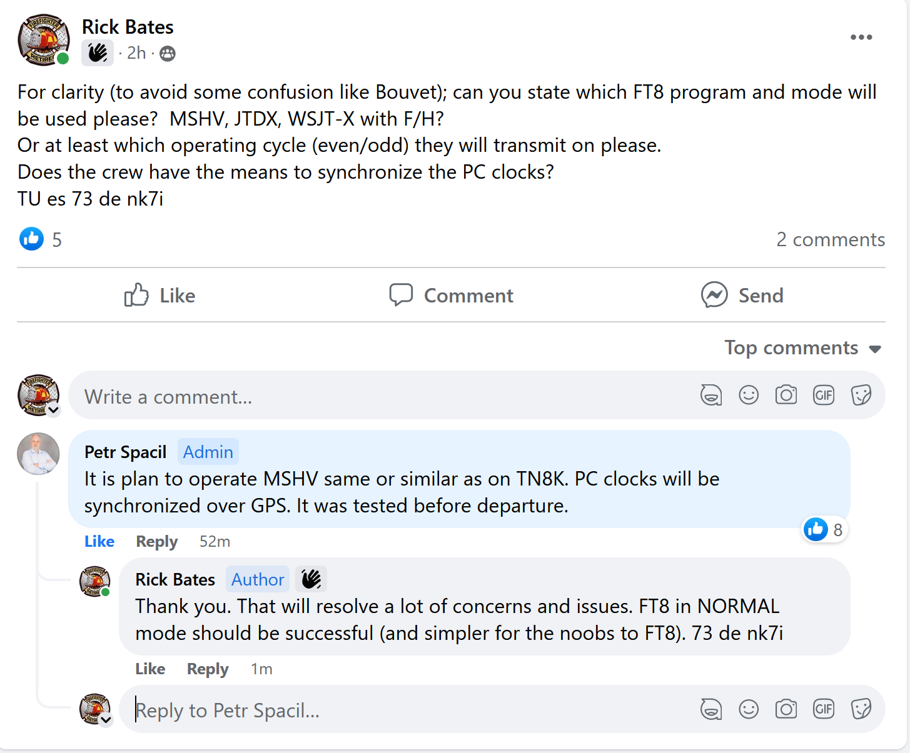

The clear advantage of FB (and I completely, without a doubt
understand ANY reticence to use it) is that it is two way PUBLIC
communication and should help reduce to multiple emails to the
pilots. You can't do that on a web page.
Here is one example:

73,
Rick nk7i
Al, If you’re understandably FB adverse, you can get most updates on DX World, along with links to each DXpedition’s home page. 73, Bruce K3NQ Sent from my iPhoneOn Feb 24, 2023, at 12:02, Rick NK7I via Chat <chat@ncdxc.org> wrote: So far, they're updating both FB and the web page. The web page does not (yet) include pics with the posting. What happens under the pressure of the operating period (and available internet), to be seen. Thanks for checking the FB link. 73, Rick nk7iOn 2/24/2023 11:57 AM, al.n6ta@gmail.com wrote: Seems private. Do I really need to create a FB account after all these years of surviving without it? Is a webpage somehow at a disadvantage to FB? Al -----Original Message----- From: Chat <chat-bounces@ncdxc.org> On Behalf Of Rick NK7I via Chat Sent: Friday, February 24, 2023 10:41 AM To: undisclosed-recipients: Subject: [NCDXC Chat] 3B7M St Brandon update 1) After a delay to let a cyclone (hurricane) pass, the team is on the boat enroute to the island (all are in tee shirts and shorts, not a little jealous of that with -21 wind chill here yesterday). They will stop at 'north island' to pick up crew, then proceed to the south island to set up (figure a day at least). They are in good spirits (no lack of beer presented in photos). 2) There is a Facebook page dedicated to the effort and it appears that will be one of their main communication dispersion points. I do not know if a FB login is required (I manage groups there and am always logged in). This is where you will find the photos as well. https://www.facebook.com/groups/651229506355125/ 3) Their web page (which also shows simpler updates) is: https://3b7m.com/ I'm looking forward to another ATNO. GL es 73, Rick nk7i _______________________________________________ Chat mailing list Chat@ncdxc.org http://mail.ncdxc.org/mailman/listinfo/chat_ncdxc.org_______________________________________________ Chat mailing list Chat@ncdxc.org http://mail.ncdxc.org/mailman/listinfo/chat_ncdxc.org